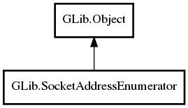

GLib.SocketAddressEnumerator Reference Manual
Packages
gio-2.0
GLib
SocketAddressEnumerator
SocketAddressEnumerator
next
next_async
SocketAddressEnumerator
Object Hierarchy:

Description:
public
abstract
class
SocketAddressEnumerator
:
Object
All known sub-classes:
ProxyAddressEnumerator
Namespace:
GLib
Package:
gio-2.0
Content:
Creation methods:
protected
SocketAddressEnumerator
()
Methods:
public
virtual
SocketAddress
next
(
Cancellable
? cancellable =
null
)
throws
Error
public
virtual
async
SocketAddress
next_async
(
Cancellable
? cancellable =
null
)
throws
Error